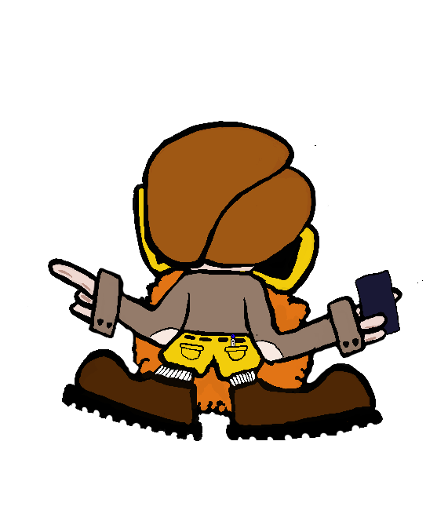

Step inside! Mr. Fraction will guide you through everything
— from what fractions are, to simplifying, operating,
and converting them. Pick a station below to get started.
▶ Click the factory for a tour — then choose a station below
Choose Your Station
Station 01
Job Training
Discover what fractions are, why they matter, and how to read them. Interactive activities included!
Station 02
Simplify Fractions
Find the Greatest Common Factor and shrink fractions down to their simplest form, step by step.
Station 03
Fraction Operations
Add, subtract, multiply, and divide fractions with visual rectangle models showing exactly what's happening.
Station 04
Convert Fractions
See how fractions, decimals, and percentages all describe the same amount — just in different ways.

Station 05
Factory Floor
Sort, simplify, and package fractions for shipment! Show the factory you understand fractions inside and out.
5
Stations
∞
Fractions to Explore
1
Mr. Fraction
Station 01 — Job Training
Job Training
Two training bays — what fractions are, and what you do with them.
🚪 Two Training Bays
Job Training runs in two bays. Bay A is about what a fraction
is — reading it, picturing it, comparing it. Bay B is about
what you do with one. Start wherever you like; you can switch at any time.
Bay A · What Fractions Are
Step 1 of 9
Station 02 — Simplifier
Simplify Fractions
Find the GCF and reduce any fraction to its simplest form.
📥 Enter Your Fraction
NumeratorDenominator
✅ This fraction is already in its simplest form!
🎯 Result
Original
GCF =
÷=
÷=
Simplified
🥧 Circle Model
Original
Simplified
📊 Bar Model
Original
Simplified
Station 03 — Operations
Fraction Operations
Build fractions with sliders, pick an operation, and see the result visually.
Station 04 — Converter
Convert Fractions
Change any value and watch the others update instantly.
🔄 Change any value — they all update together!
Fractions
Top (↑)
Bottom (↓)
34
Decimals
Value
≈ rounded
0.75
between 0 and 10
Percentages
Percent
≈ rounded
75%
out of 100%
💡 How They Connect
Fraction → Decimal
Divide the top by the bottom.
3 ÷ 4 = 0.75
Decimal → Percent
Multiply by 100.
0.75 × 100 = 75%
Percent → Fraction
Write over 100 and simplify.
75/100 = 3/4
⚙️ The Remainder Belt
Load a fraction. Pull the lever. Watch what the machine does with the leftovers.
Load:
3 ÷ 8
idle
speed
▾ new batch from the converter
◀ back
0
machine log
out—
Pick a fraction and pull the lever.
🔎 Dividing by d, only d − 1 leftovers can ever exist — so a repeat is
unavoidable. Find a denominator whose log uses every one of them before it comes back around.
FLOOR ACTIVE
Station 05 · Assessment Bay
FACTORY FLOOR
Clock in. Sort, simplify, match, and package fractions to ship them out — no multiple choice. Prove you know the product.
Your Progress⭐ 0 / 8 challenges
🔵 Tier 1 — Sorting Line
📦 Challenge 1: Load the Conveyor
These fraction crates need to go on the conveyor in order from smallest to largest.
Drag a crate into the drop zone (or tap it), then drag crates around to reorder. Tap a placed crate to send it back.
Drop zone — smallest → largest
Crate pool
⚖️ Challenge 2: Quality Check
The inspector needs to know which batch has more material. Tap the larger fraction in each pair. Use the visual bars — they show you the size!
☕
Factory Break — Nice work on Tier 1!
You just proved you can tell which fractions are bigger and put them in order. That means you understand what the numerator and denominator actually mean together. Up next: the Simplify Station — same value, cleaner form!
🟠 Tier 2 — Simplify Station
✂️ Challenge 3: Find the Simplified Form
Each fraction below needs to be simplified before it ships. Tap the correct simplified form. Remember — same value, fewer parts!
🏷️ Challenge 4: Label the Crate
Type in the simplified (lowest terms) form of each fraction. The factory only ships fully simplified products!
🎉
Factory Break — Halfway through!
Simplifying means finding the same amount but in the most efficient package. A fraction like 6/8 and 3/4 fill exactly the same space — 3/4 is just the cleaner label. Next stop: the Assembly Line, where you'll add, subtract, and multiply the same pair of fractions and watch how each operation behaves differently!
🟣 Tier 3 — Assembly Line
⚙️ Challenge 5: Run the Assembly Line
Same two parts, three machines. Take the same pair of fractions and run them through add, subtract, and multiply. Watch what changes: adding and subtracting need a common denominator first, but multiplying does not. Type each answer as a fraction — any equal fraction counts, and the floor will tell you if it can still be simplified.
🔴 Tier 4 — Packaging & Dispatch
🔗 Challenge 6: Match the Packages
Each fraction, decimal, and percentage in the same row describes the same amount. Tap a fraction, then tap its matching decimal and percentage. They'll lock in green when correct!
Fraction
Decimal
Percent
🔢 Challenge 7: Fill the Manifest
Complete the shipping manifest: each row shows a fraction — type its decimal and percentage. The factory inspector needs all three forms to sign off!
📦 Challenge 8: Pack the Shipment
This order needs more than one batch packed at once. Pick a batch tab below, then tap every package that equals it — each batch locks in its own color. Some packages are imposters that match no batch; leave those alone.
🖈 Challenge 9: Stamp the Bar
The machine has run each fraction and printed the digits, but nobody stamped the bars.
Click the first digit that repeats, then the last one — the bar will stretch between them.
Mark one copy of the repeating block, starting as early as it truly starts.
You earned it!
Mr. Fraction's Fraction Factory
Certificate of Completion
This certifies that
A Master Fraction Engineer
has cleared all nine stations of the Factory Floor — sorting, comparing, simplifying,
operating on, matching, and converting fractions, decimals, and percentages with factory precision.